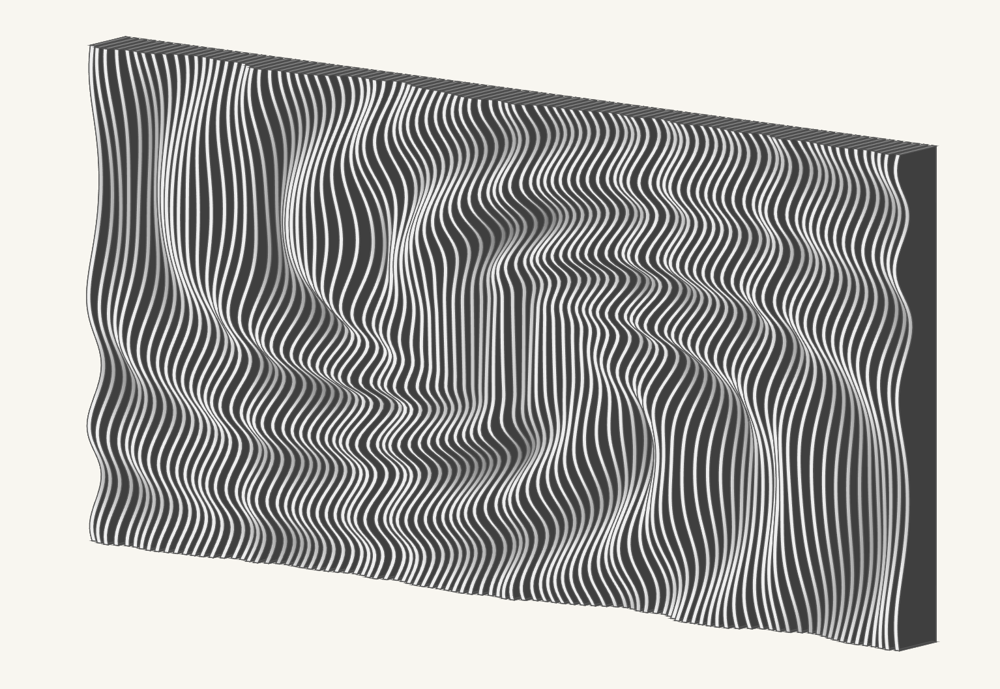
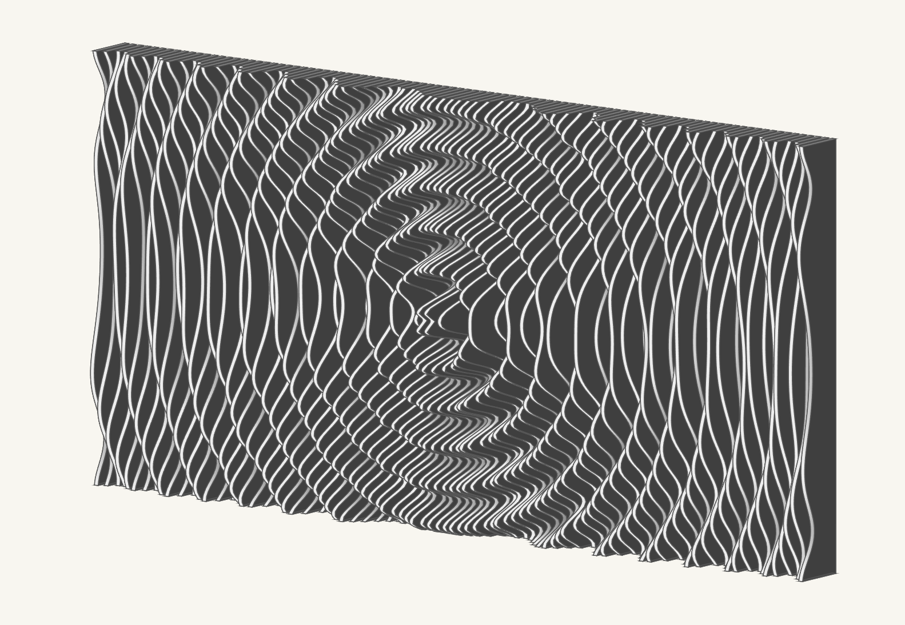
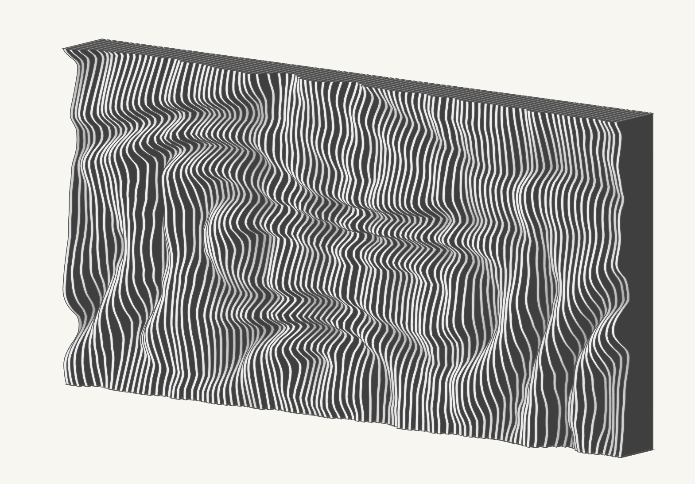
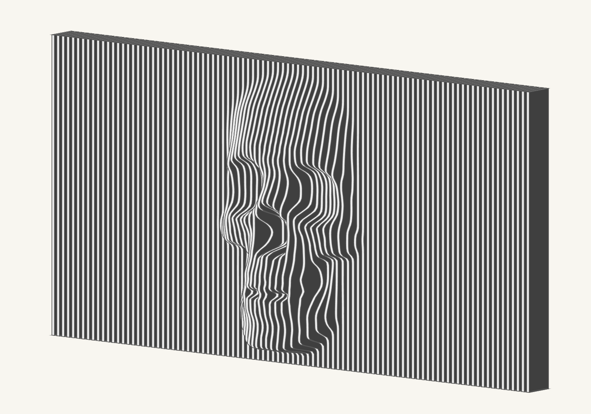
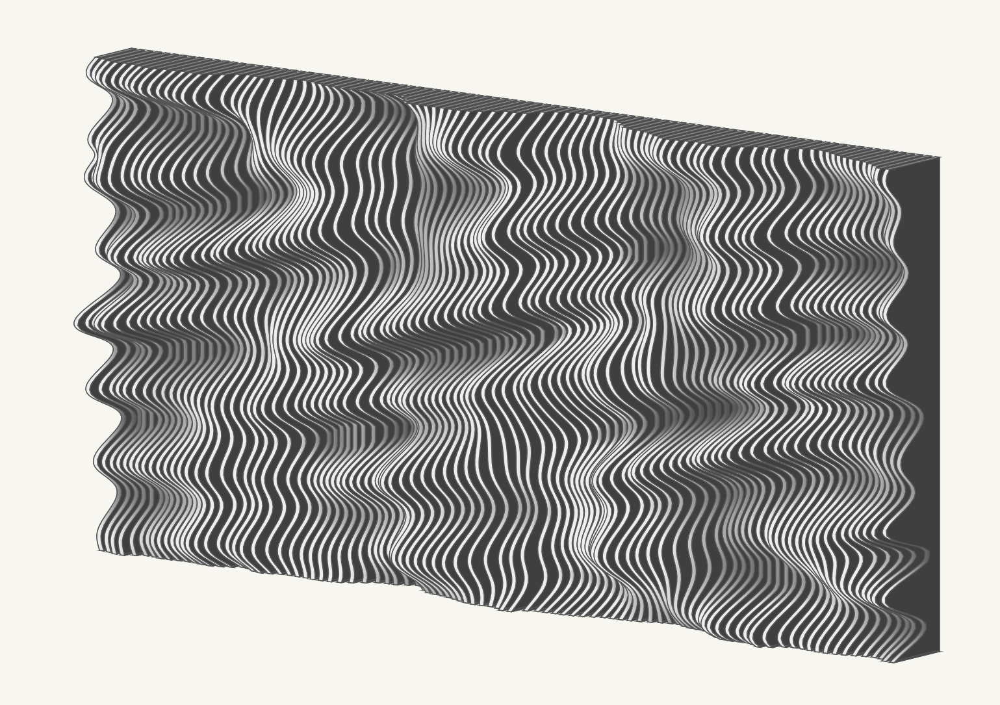
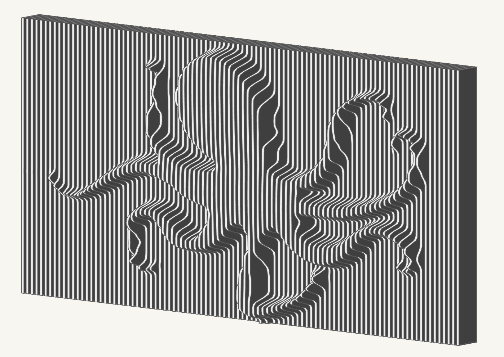
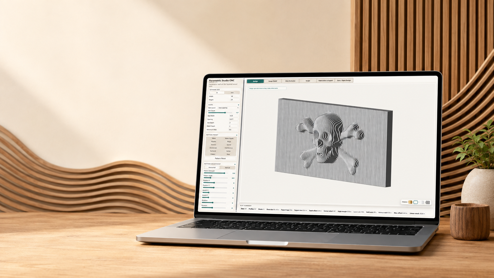
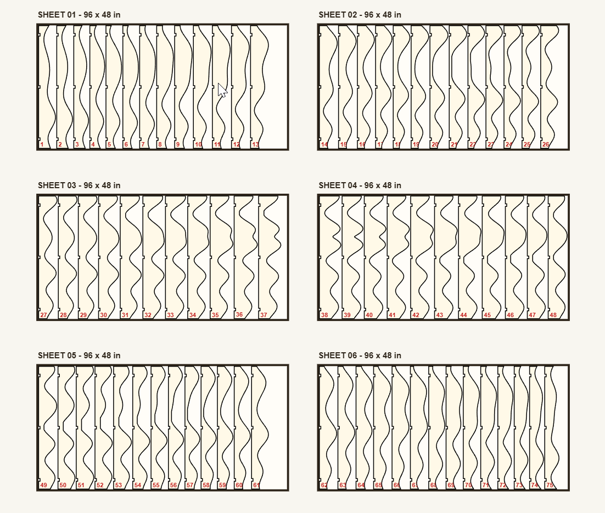

Generate waves, ripples, rings, gyroid, vortex, craters, dunescape, starburst, face, and other CNC-friendly relief styles.
Design relief panels without rebuilding models from scratch.
Parametric Studio CNC is made for CNC users, woodworkers, and makers who want fast control over slat count, spacing, depth, sheet layout, support pockets, and export files.
Bring in grayscale depth maps and convert them into slat-based relief geometry with image controls for contrast, falloff, smoothing, and relief depth.
Preview sheet layouts, scale to material size, control part gaps, edge margins, support pockets, support tabs, and slat numbering.
Create clear zones for TVs, shelves, cabinets, fireplaces, or other wall features while preserving the surrounding parametric design.
Push, lower, smudge, pinch, and add text to adjust the relief after the base pattern is generated.
Save and reopen project files locally using JSON so designs can be updated as the software evolves.
Explore a range of CNC-ready relief styles.
Use presets, depth maps, sculpting, and pattern controls to create panels ranging from calm wave fields to bold sculptural reliefs.







From pattern idea to CNC layout.
Start with a size and material plan, build the pattern, then move into fabrication output when the design is ready.
Set artwork and slat parameters
Choose imperial or metric units, artwork size, slat count, spacing, width, depth, and relief settings.
Select or import a design
Use built-in presets, import a depth map, sculpt the surface, or exclude areas for real-world installations.
Prepare for fabrication
Review sheet layouts, support rail details, part spacing, edge margin, numbering, and machine-ready output.
Export files built around CNC workflows.
The full version unlocks files intended for downstream CAD/CAM software, including profile vectors and 3D preview geometry.
SVG2D profile vectors for CAD/CAM setup
DXFCAD-friendly profile output
STL3D model preview and reference geometry
JSONLocal save/open design files

Designed for desktop browsers and CNC users.
The software runs in a modern desktop web browser and is intended for users who already understand CNC setup, tooling, material holding, feeds, speeds, and CAM preparation.
PlatformWindows, macOS, Linux, or ChromeOS
BrowserRecent Chrome, Edge, Brave, Firefox, or Safari
Memory8 GB RAM minimum, 16 GB recommended
Use caseDesktop or laptop recommended, not mobile
Common CNC wall art questions.
Quick answers for makers comparing parametric wood slat wall design tools, depth map relief workflows, and CNC-ready export options.
What is Parametric Studio CNC?
It is browser-based CNC wall art software for creating parametric wood slat panels, depth map reliefs, fabrication layouts, and export files.
Can it export files for CNC software?
Yes. The full version exports SVG, DXF, STL, and JSON design files for downstream CAD and CAM workflows.
Can I use depth maps?
Yes. True grayscale depth maps can be imported and converted into slat-based CNC relief geometry.
Does it work on mobile?
The app is designed for modern desktop browsers. A laptop or desktop computer is recommended for the best experience.
Build parametric wall art faster.
Try the free version in your browser, then unlock export and save/open features when you are ready to fabricate.